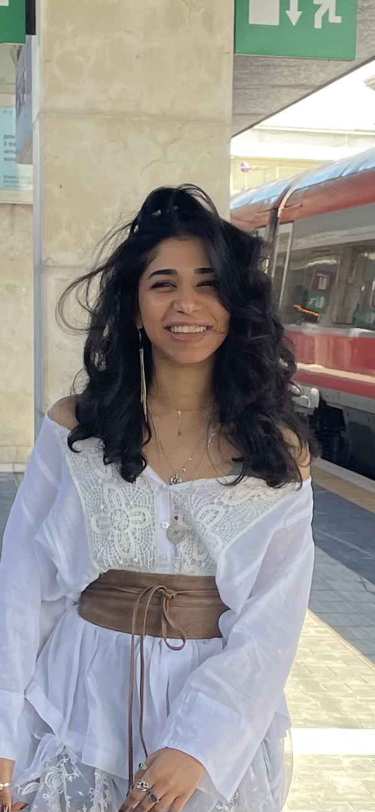

Nehal Gendy è un’artista multidisciplinare e una marketer — ormai non più solo autoproclamata.

C’è chi la conosce come studentessa di economia, chi se la ricorda come la guida che l'ha aiutato durante un festival del cinema e chi la identifica semplicemente come «quella ragazza che vuole sviluppare bicipiti giganteschi». La verità? Ama i film, il buon cibo, il caos delle metropoli, le verdure arrostite e cucirsi i propri vestiti. In breve, qualsiasi cosa sia anche solo lontanamente creativa.
Oggi porta questa stessa energia in agenzia: anche tra brand e campagne con messaggi e linee guida ben precise, per lei seguire le regole non significa affatto essere noiosi, così adatta le sue idee e forza i limiti per portare sempre un guizzo creativo in più, senza mai perdere il filo. Il suo capo le ha persino detto che è «curiosa come un gatto» — lei spera fosse un complimento, perché è esattamente così che l’ha preso. Beh, In fondo è tutta una questione di prospettiva, e in questo portfolio vi mostra la sua: ecco cos’ha combinato finora!
Progetti scelti.
Lavoro in agenzia
Campagne pubblicitarie

Design e cultura

Illustrazione

Se siete arrivati fin qui, significa che avete fatto scorrere almeno la home page: un piccolo passo per voi, ma un grande passo verso qualcosa di importante!
Questo portfolio potrebbe anche essere stato il lavoro di un solo giorno, ma l’impegno, il coraggio e il divertimento nel creare, sperimentare ed essere un po’ folle e tremendamente dedita allo stesso tempo sono ciò che mi ha portata fin qui: considerate questo portfolio la mia petizione per rendere i colloqui meno noiosi e portare un po’ di sana stravaganza nel mercato del lavoro (spero almeno vi siate divertiti!).
Gran parte di ciò che avete visto nasce da un numero imprecisato di prove gratuite di Adobe — ho perso il conto. Immaginate però cosa potrei fare con qualche risorsa in più, magari offerta da un ruolo nel marketing… avete colto l’allusione, vero? Le cose che si fanno per passione!
Let’s Talk
Vi interessa avermi in squadra? Fissate un colloquio scrivendomi a:
nehalnagah2003@gmail.com
Sono super motivata e non vedo l'ora di mettere le mie competenze al vostro servizio — sempre che le riteniate all'altezza — e di imparare da voi per far fare un salto alla mia carriera (e divertirmi ancora di più a dare vita alle mie idee). Chissà, magari un giorno avrò la mia agenzia di enorme successo e vi beccherete una menzione d'onore nel mio discorso di premiazione... direi che è un ottimo motivo per assumermi!
Per qualsiasi dubbio o chiarimento, sono a un messaggio di distanza!
Cel. 320 088 9237
Nehal Gendy